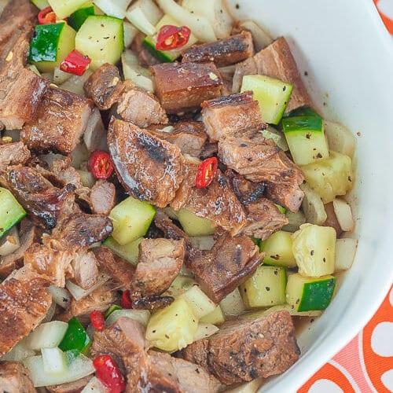

Kilawin
Pork Kilawin or Kilawing baboy is a dish that you can make with grilled pork belly.
Unlike the similar kilawin seafood dishes, meat such as pork needs to be cooked
first before being prepared this way because it does not get cooked completely
when soaked in vinegar.
Ingredients
- Grilled Pork
- Cane vinegar
- Cucumber
- Granulated white sugar
- Chilies
- Onions or Yellow onions
- Black pepper
How to Cook:
- Chop pork, onions, and cucumber into bite size.
- Make mixture of vinegar, salt, ground black pepper, chili, and sugar.
- Mix it all and adjust the taste according to your preference.
- Let it stay for 30 minutes to 1 hour for the best taste but you can eat it after making it.
- Eat and Enjoy!